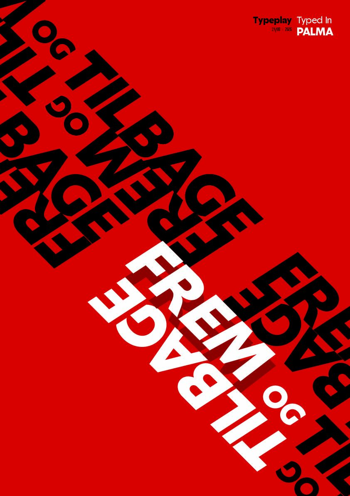
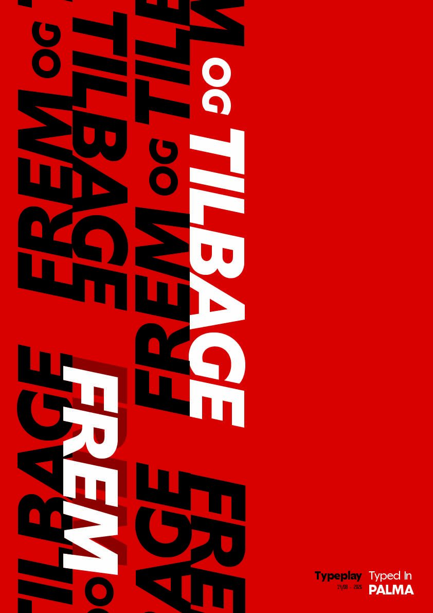
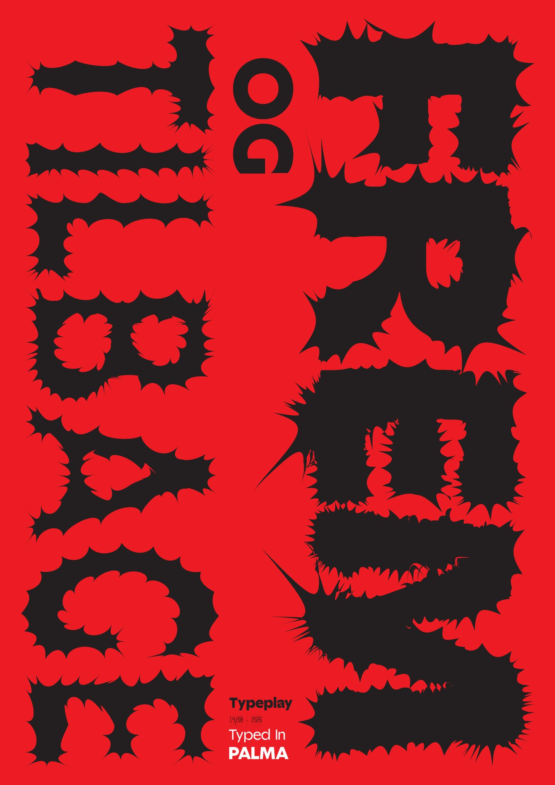
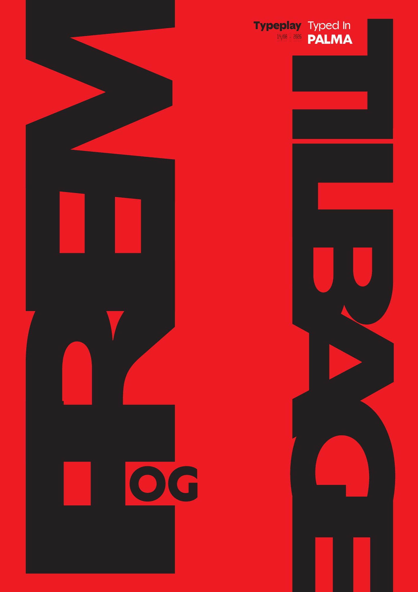

Udtrykket “frem og tilbage” bliver spejlet, roteret, gentaget og skubbet på tværs af formatet, så læsningen selv bevæger sig frem og tilbage. Serien er holdt i en stram palet af rød, sort og hvid, så al energien ligger i bogstavformerne. Én af plakaterne går skridtet videre og opløser bogstaverne i flossede, organiske kanter, hvor ordet skal findes i formen.
Projekt 05 / 05
Frem og tilbage
En kort øvelse i at lade ordene gøre det, de siger.


Idéen


Næste projekt
Sidste Skoledag→